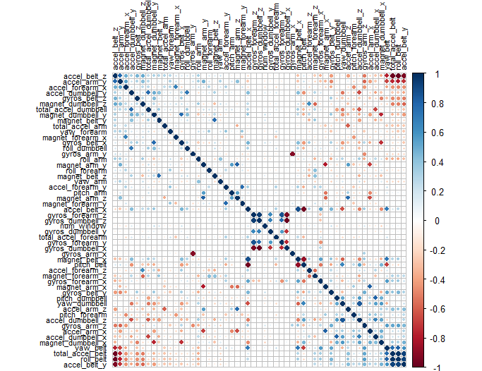

title: Prediction Assignment Writeup author: Johannes Delion date: July 21, 2019
Using devices such as Jawbone Up, Nike FuelBand, and Fitbit it is now possible to collect a large amount of data about personal activity relatively inexpensively. These type of devices are part of the quantified self movement - a group of enthusiasts who take measurements about themselves regularly to improve their health, to find patterns in their behavior, or because they are tech geeks. One thing that people regularly do is quantify how much of a particular activity they do, but they rarely quantify how well they do it. In this project, your goal will be to use data from accelerometers on the belt, forearm, arm, and dumbell of 6 participants. They were asked to perform barbell lifts correctly and incorrectly in 5 different ways. More information is available from the website here: http://web.archive.org/web/20161224072740/http:/groupware.les.inf.puc-rio.br/har (see the section on the Weight Lifting Exercise Dataset).
Data
The training data for this project are available here:
https://d396qusza40orc.cloudfront.net/predmachlearn/pml-training.csv
The test data are available here:
https://d396qusza40orc.cloudfront.net/predmachlearn/pml-testing.csv
The data for this project come from this source: http://web.archive.org/web/20161224072740/http:/groupware.les.inf.puc-rio.br/har. If you use the document you create for this class for any purpose please cite them as they have been very generous in allowing their data to be used for this kind of assignment.
We first set the working directory and load the required R packages.
setwd("C:/Users/P358774/Coursera/Prediction Assignment")
library(lattice)
library(ggplot2)
library(caret)
library(rpart)
library(rpart.plot)
library(corrplot)
library(rattle)
library(randomForest)
library(RColorBrewer)
library(e1071)
library(gbm)
set.seed(100)
Loaded gbm 2.1.5
Warning message:
package 'gbm' was built under R version 3.6.1
The next step is to load the data from the source stated above and to split the training data set into two parts (75% for creating the models, 25% for validation). The testing data set is not touched and will only be used to generate the answers for the quiz.
url_train <- "http://d396qusza40orc.cloudfront.net/predmachlearn/pml-training.csv"
url_quiz <- "http://d396qusza40orc.cloudfront.net/predmachlearn/pml-testing.csv"
data_train <- read.csv(url(url_train), strip.white = TRUE, na.strings = c("NA",""))
data_quiz <- read.csv(url(url_quiz), strip.white = TRUE, na.strings = c("NA",""))
in_train <- createDataPartition(data_train$classe, p=0.75, list=FALSE)
train_set <- data_train[ in_train, ]
test_set <- data_train[-in_train, ]
dim(train_set)
[1] 14718 160
dim(test_set)
[1] 4904 160
The data sets have 160 variables (columns). The first step is to use the function nearZeroVar to identify Near Zero Variance predictors and to remove them.
nzv_var <- nearZeroVar(train_set)
train_set <- train_set[ , -nzv_var]
test_set <- test_set [ , -nzv_var]
dim(train_set)
[1] 14718 120
dim(test_set)
[1] 4904 120
The second step is to remove variables which are mostly NAs (threshold = 0.95).
na_var <- sapply(train_set, function(x) mean(is.na(x))) > 0.95
train_set <- train_set[ , na_var == FALSE]
test_set <- test_set [ , na_var == FALSE]
dim(train_set)
[1] 14718 59
dim(test_set)
[1] 4904 59
The last step is to remove the columns which are only used for identification (1-5).
train_set <- train_set[ , -(1:5)]
test_set <- test_set [ , -(1:5)]
dim(train_set)
[1] 14718 54
dim(test_set)
[1] 4904 54
In order to understand the relation between the varibales better, a correlation analysis is performed. The method is circle (standard) and for order FPC (first principal component) is chosen.
corr_matrix <- cor(train_set[ , -54])
corrplot(corr_matrix, order = "FPC", method = "circle", type = "full",
tl.cex = 0.7, tl.col = rgb(0, 0, 0))

You can see that only a few variables show significat correlation (dark blue for positive, dark red for negative). From this we can conclude that a Principal Components Analysis (PCA) would not be beneficial and therefore is not conducted here.
Three methods for model building are used: Decision Tree Model, Generalized Boosted Model and Random Forest Model. The best model (highest accuracy on test dataset) will be used for the quiz set.
set.seed(100)
fit_decision_tree <- rpart(classe ~ ., data = train_set, method="class")
fancyRpartPlot(fit_decision_tree)
Application of the Decision Tree Model to the validation set:
predict_decision_tree <- predict(fit_decision_tree, newdata = test_set, type="class")
conf_matrix_decision_tree <- confusionMatrix(predict_decision_tree, test_set$classe)
conf_matrix_decision_tree
Confusion Matrix and Statistics
Reference
Prediction A B C D E
A 1240 184 58 66 55
B 62 566 51 80 100
C 5 46 687 117 58
D 68 118 39 512 108
E 20 35 20 29 580
Overall Statistics
Accuracy : 0.731
95% CI : (0.7184, 0.7434)
No Information Rate : 0.2845
P-Value [Acc > NIR] : < 2.2e-16
Kappa : 0.6581
Mcnemar's Test P-Value : < 2.2e-16
Statistics by Class:
Class: A Class: B Class: C Class: D Class: E
Sensitivity 0.8889 0.5964 0.8035 0.6368 0.6437
Specificity 0.8966 0.9259 0.9442 0.9188 0.9740
Pos Pred Value 0.7735 0.6589 0.7525 0.6059 0.8480
Neg Pred Value 0.9530 0.9053 0.9579 0.9281 0.9239
Prevalence 0.2845 0.1935 0.1743 0.1639 0.1837
Detection Rate 0.2529 0.1154 0.1401 0.1044 0.1183
Detection Prevalence 0.3269 0.1752 0.1862 0.1723 0.1395
Balanced Accuracy 0.8927 0.7612 0.8738 0.7778 0.8089
Calculating the accuracy using cross validation:
summary_pred_dt <- data.frame(obs = as.factor(test_set$classe), predicted = predict_decision_tree)
acc_dt <-sum(summary_pred_dt$obs==summary_pred_dt$predicted)/nrow(summary_pred_dt)
acc_dt
[1] 0.7310359
And the estimated error (out of sample):
1-acc_dt
[1] 0.2689641
The accuracy is with 0.731 not very high. The plot is generated below.
plot(conf_matrix_decision_tree$table, col = conf_matrix_decision_tree$byClass,
main = paste("Decision Tree Model - Accuracy =",
round(conf_matrix_decision_tree$overall['Accuracy'], 3)))
First step is to fit the model:
set.seed(100)
ctrl_GBM <- trainControl(method = "repeatedcv", number = 5, repeats = 1)
fit_GBM <- train(classe ~ ., data = train_set, method = "gbm",
trControl = ctrl_GBM, verbose = FALSE)
fit_GBM$finalModel
A gradient boosted model with multinomial loss function.
150 iterations were performed.
There were 53 predictors of which 53 had non-zero influence.
And then predict the test set:
predict_GBM <- predict(fit_GBM, newdata = test_set)
conf_matrix_GBM <- confusionMatrix(predict_GBM, test_set$classe)
conf_matrix_GBM
Confusion Matrix and Statistics
Reference
Prediction A B C D E
A 1394 8 0 0 0
B 1 934 5 1 1
C 0 7 849 6 3
D 0 0 0 796 4
E 0 0 1 1 893
Overall Statistics
Accuracy : 0.9923
95% CI : (0.9894, 0.9945)
No Information Rate : 0.2845
P-Value [Acc > NIR] : < 2.2e-16
Kappa : 0.9902
Mcnemar's Test P-Value : NA
Statistics by Class:
Class: A Class: B Class: C Class: D Class: E
Sensitivity 0.9993 0.9842 0.9930 0.9900 0.9911
Specificity 0.9977 0.9980 0.9960 0.9990 0.9995
Pos Pred Value 0.9943 0.9915 0.9815 0.9950 0.9978
Neg Pred Value 0.9997 0.9962 0.9985 0.9981 0.9980
Prevalence 0.2845 0.1935 0.1743 0.1639 0.1837
Detection Rate 0.2843 0.1905 0.1731 0.1623 0.1821
Detection Prevalence 0.2859 0.1921 0.1764 0.1631 0.1825
Balanced Accuracy 0.9985 0.9911 0.9945 0.9945 0.9953
Calculating the accuracy using cross validation:
summary_pred_gbm <- data.frame(obs = as.factor(test_set$classe), predicted = predict_GBM)
acc_gbm <-sum(summary_pred_gbm$obs==summary_pred_gbm$predicted)/nrow(summary_pred_gbm)
acc_gbm
[1] 0.9922512
And the estimated error (out of sample):
1-acc_gbm
[1] 0.007748777
The accuracy is with 0.992 very high. The model could be already used to predict the quiz set. The plot of the matrix is shown below.
plot(conf_matrix_GBM$table, col = conf_matrix_GBM$byClass,
main = paste("Generalized Boosted Model - Accuracy =", round(conf_matrix_GBM$overall['Accuracy'], 3)))
First step is to fit the model:
set.seed(100)
ctrl_RF <- trainControl(method = "repeatedcv", number = 5, repeats = 1)
fit_RF <- train(classe ~ ., data = train_set, method = "rf",
trControl = ctrl_RF, verbose = FALSE)
fit_RF$finalModel
Call:
randomForest(x = x, y = y, mtry = param$mtry, verbose = FALSE)
Type of random forest: classification
Number of trees: 500
No. of variables tried at each split: 27
OOB estimate of error rate: 0.21%
Confusion matrix:
A B C D E class.error
A 4183 1 0 0 1 0.0004778973
B 6 2839 2 1 0 0.0031601124
C 0 4 2563 0 0 0.0015582392
D 0 0 10 2401 1 0.0045605307
E 0 0 0 5 2701 0.0018477458
And then predict the test set:
predict_RF <- predict(fit_RF, newdata = test_set)
conf_matrix_RF <- confusionMatrix(predict_RF, test_set$classe)
conf_matrix_RF
Confusion Matrix and Statistics
Reference
Prediction A B C D E
A 1395 2 0 0 0
B 0 947 2 0 3
C 0 0 853 3 0
D 0 0 0 801 2
E 0 0 0 0 896
Overall Statistics
Accuracy : 0.9976
95% CI : (0.9957, 0.9987)
No Information Rate : 0.2845
P-Value [Acc > NIR] : < 2.2e-16
Kappa : 0.9969
Mcnemar's Test P-Value : NA
Statistics by Class:
Class: A Class: B Class: C Class: D Class: E
Sensitivity 1.0000 0.9979 0.9977 0.9963 0.9945
Specificity 0.9994 0.9987 0.9993 0.9995 1.0000
Pos Pred Value 0.9986 0.9947 0.9965 0.9975 1.0000
Neg Pred Value 1.0000 0.9995 0.9995 0.9993 0.9988
Prevalence 0.2845 0.1935 0.1743 0.1639 0.1837
Detection Rate 0.2845 0.1931 0.1739 0.1633 0.1827
Detection Prevalence 0.2849 0.1941 0.1746 0.1637 0.1827
Balanced Accuracy 0.9997 0.9983 0.9985 0.9979 0.9972
Calculating the accuracy using cross validation:
summary_pred_rfm <- data.frame(obs = as.factor(test_set$classe), predicted = predict_RF)
acc_rfm <-sum(summary_pred_rfm$obs==summary_pred_rfm$predicted)/nrow(summary_pred_rfm)
acc_rfm
[1] 0.997553
And the estimated error (out of sample):
1-acc_rfm
[1] 0.002446982
The accuracy is with 0.998 similar to the Generalized Boosted Model. The plot of the confusion matrix is shown below.
plot(conf_matrix_RF$table, col = conf_matrix_RF$byClass,
main = paste("Random Forest Model - Accuracy =", round(conf_matrix_RF$overall['Accuracy'], 3)))
As the Random Forest Model shows the highest accuracy (0.9998) it is selected to predict the test set.
predict_quiz <- predict(fit_RF, newdata = data_quiz)
predict_quiz
[1] B A B A A E D B A A B C B A E E A B B B
Levels: A B C D E